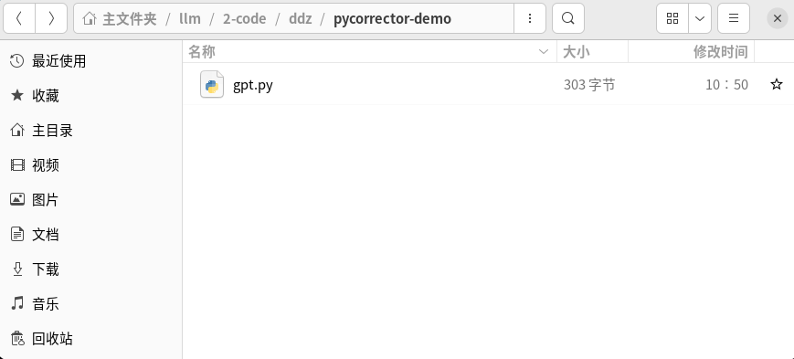
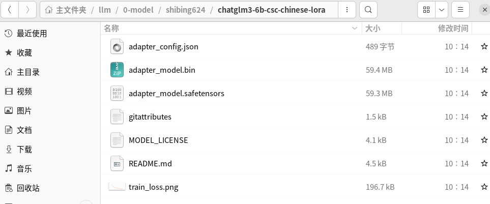
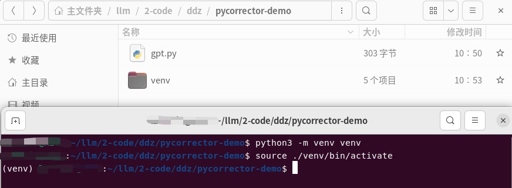
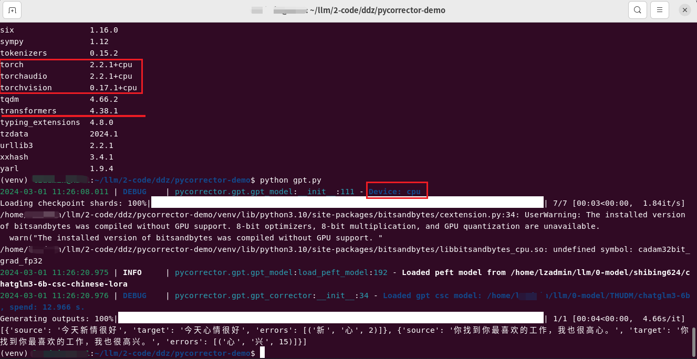

官方介绍：中文文本纠错工具。支持中文音似、形似、语法错误纠正，python3开发。
官网：MulanAI （说明：真实太棒了，这里有好多在线体验的项目……）
硬件环境是：Ubuntu 22.04 + Intel(R)Xeon(R) CPU E5-2699 v4 2.20GHZ + RAM（512GB）
说明：这里用的是
新建一个项目来体验

说明：
想着基于大语言模型来体验
这个模型用的就比较多了，之前已经下载过了，路径为：
之前没有下载这个模型，调试的时候报错才发现还需要这个。该模型是在 shibing624/chatglm3-6b-csc-chinese-lora · HF Mirror这里下载的。 路径为：

# 创建
python3 -m venv venv
# 激活
source ./venv/bin/activate
# 退出虚拟环境
deactivate

入口文件为
from pycorrector import GptCorrector
m = GptCorrector(model_name_or_path="/home/xxx/llm/0-model/THUDM/chatglm3-6b",peft_name="/home/xxx/llm/0-model/shibing624/chatglm3-6b-csc-chinese-lora")
print(m.correct_batch(['今天新情很好', '你找到你最喜欢的工作，我也很高心。']))
肯定是要安装
# 首先安装 torch （GPU比较紧张，这里安装的是CPU版本）
pip3 install torch torchvision torchaudio --index-url https://download.pytorch.org/whl/cpu
# 安装其他依赖
pip install pycorrector pandas tqdm transformers datasets accelerate sentencepiece peft bitsandbytes
python gpt.py
